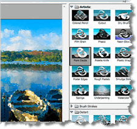
Instead of writing some more 2D array functions or procedures, and checking them with the Check program, let's finish up this chapter by learning how to do something practical and fun.So you can get a feel for how 2D arrays are actually used in the real world, we'll write a few little image filter programs, similar, (in principle) to the filters found in programs like Photoshop.
Although the program we'll write won't be as sophisticated or as fast as the commercial filters you can purchase, it will give you an idea about how such programs are written. (Plus, you'll get some exercise using 2D arrays!) Let's start by looking at how images are stored as data.
If you look inside a photographic image from a digital camera,
what you'll find is a 2D array of integers, just like the 2D arrays
you met earlier in the chapter. Each integer represents a single
RGB color, like those shown here:
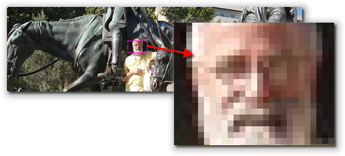
With theGImage class in the ACM libraries, we can
extract those pixels as a 2D int[][] array,
using the getPixelArray() method like this.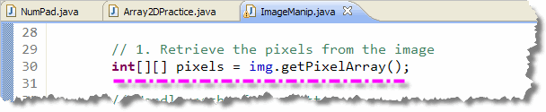
Then, we can use a loop to modify or move the pixels that we are interested in. Once we've modified the array, we can turn it back into a new image using one of the GImage constructors, like this.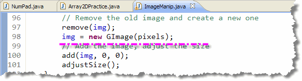
The internal storage format used for images inside your computer is
actually a bit more complex than I've shown here. Specifically, the
Image class often uses a flattened 1D int-array
representation instead of the 2D arrays provided by the
ACM libraries and the Picture class.
Of course, that shouldn't bother you, because you
know how to convert between those two representations, right?

That's all the background you need. To get started, open ImageManipulation.java (from this chapter's code folder) in DrJava. When the program starts up it asks you to pick a file. Place your pictures in DrJava's media folder. If you don't have an image, I've placed two of my vacation pictures in your media folder that you can work on.
You may want to hard-code the file name on line 20, and comment out the line that asks you to pick a file, if you want to process the same image each time.
Task 1: Darkening an Image
Inside ImageManipulation.java locate the section that handles the code for the darken button. (I've added a #1 comment).
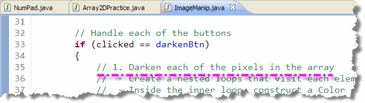
The code in this section will be called when the user clicks the program's Darken button. Your job is to replace the comments I've added with code that makes the program work.Here are the steps to follow:
- Use nested loops to visit every element in the array:
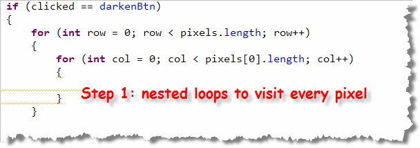
- Use the one-parameter
Colorconstructor to create an object using the integer color values frompixelslike this:
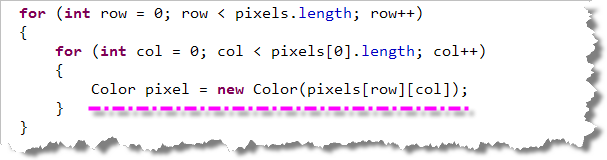
- Use the
Color darker()method to darken the pixel and then use theColorclassgetRGB()method to convert theColorobject back into an integer RGB color value. You can then put the modified integer value back into the currentpixelsarray element like this:
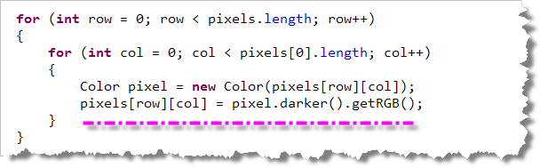
Task 2: Mirror Image
You can modify the pixels in other ways. You don't have to just put the same pixel back in the same location. If you take the pixels on the left side of the picture, and exchange them one by one to the right side of the picture, you can flip the original image horizontally. If you copy the pixels, instead of exchanging them, you can create a mirror image effect.
Let's try that. Find the section for the Mirror button, and then follow the instructions here.
- Start using nested loops. However, for the inner
(column) loop, stop when you get to the middle, since we really only
want the elements on the left-hand side of the picture. Here's
what your loops should look like:
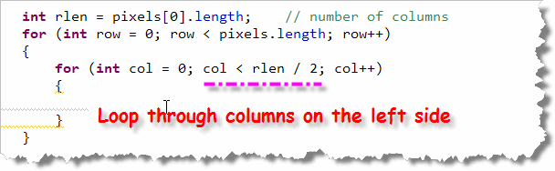
- We don't need to create a
Colorobject, since all we are doing is moving the pixel values. Just copy the current pixel element over to the corresponding position on the right side of the picture:
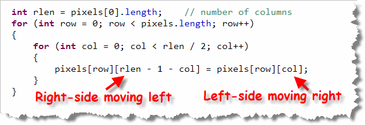
Notice whencolis 0 on any given row, that the pixel will be copied to the pixel on the very end of that same row. Whencolis 1, then that pixel will be copied to the corresponding pixel that is one-in from the far right, and so on.
Try It Out
When you're finished, run the program and click the Mirror button.
If you've done it correctly, you should see something like this:
Task 3: Image Rotation
The two filters we've written so far have left the pixels array
the same size as it began. When you rotate or change the size of the image,
though, you need to create a new array. Let's do that by completing
the code connected to the Rotate button.
Rotating Matrices
"Rotating" a 2D array (or matrix) is a little more difficult than
simply moving elements around. Here's a simple example that explains
what needs to be done. In the picture on the left is a simple
2D, 3x2 array:
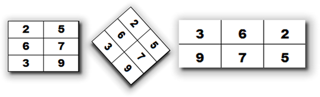
If you picture the array in your mind, you can see the first row containing 2 and 5. Underneath the two and five are the second row 6 and 7, and underneath that, in the third row are 3 and 9 like this.Now, imagine that we push this "block" over on it's side, like the picture in the center, so that if finally comes to rest like the picture on the right. The first column in the original array becomes the first row of the new array.
Notice that we can't just move elements around, since the shape of the finished array changes from 3 x 2 to 2 x 3.
To to rotate this array (let's call it values) array,
we need to:
- Create a
temparray to hold the new elements. Use the length of the original array (values) as the number of columns for the temp array. Use the length of the first row in the original array (that is, the number of columns fromvalues) as the number of rows in thetemparray.In other words, your new array should have the same number of columns as the original had rows, and the same number of rows as the original had columns.
- Now, write a nested loop that processes the first array and copies the values into the second array. Notice that if you process the first array column by column, starting at the bottom row (the element containing 3), you can copy the values across to the first row in the new array.
Rotating Pixels
We can apply this same logic to the pixels array in
ImageManipipulation. Here are the step-by-step instructions:
- We need a temporary array to hold the pixels in their
new locations. When we create the temporary array, we need to
reverse the row and column dimensions. Here's some
code that does this:
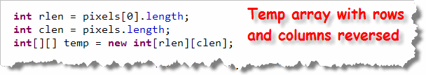
- Now, we need a nested loop that goes through the
temporary array. At each element, we grab the corresponding
element from the original
pixelsarray like this: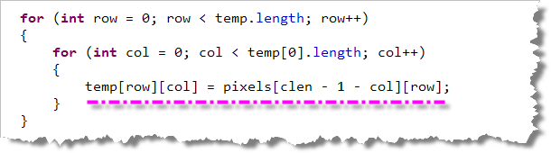
I find that looking at the matrix rotation picture from earlier in the lesson (or just drawing its equivalent on the back of an envelope) helps me to figure out exactly which pixel I need to grab from thepixelsarray. - Lastly, we need to make sure that the array variable
pixelsnow points to our new modified array. You do that with a simple assignment statement like this:
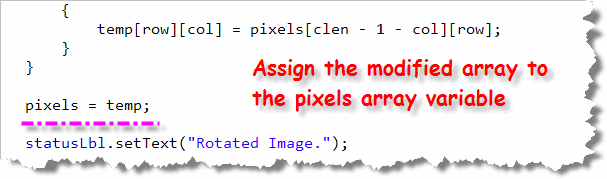